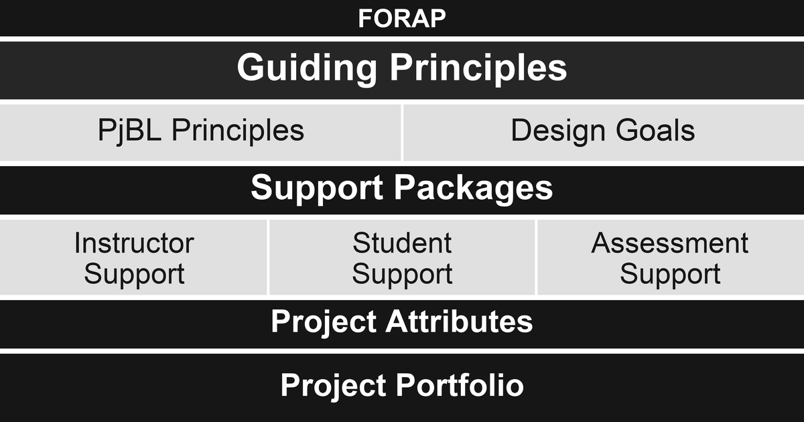

FORAP
Framework for Organizing Reusable and Adaptable PjBL Projects
FORAP is a framework for organizing and packaging computing project-based learning projects for reuse and adaptation. It is a set principles, project design goals, and structural support components that facilitates the sharing of PjBL projects in computing education. It organizes each project as a coordinated, adoption-ready package centered on aligned learning objectives and supported by instructor support materials, student support materials, and assessment materials. It is intended to help instructors design, adopt, compare, adapt, and sustain reusable PjBL projects across different computing courses.

Overview presentation
The caption transcript is supplied for review in place of the original video.
- A packaging framework for computing PjBL projects
- A reusable and adaptable way to organize PjBL projects
- A set of principles, project design goals and structural components.
- A PjBL project structure with coordinated support and assessment
- Not a single PjBL project
- Not a curriculum
- Not a PjBL process framework